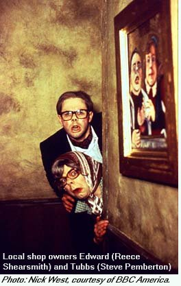

Welcome to Royston Vasey, a small village in Northern England whose welcoming sign declares, "You'll Never Leave!" This bizarre place is the setting for The League Of Gentlemen, the BBC-2 comedy series running Fridays on BBC America, with the first season Mondays on Comedy Central. League (not to be confused with the recent Alan Moore comic book "The League Of Extraordinary Gentlemen") is a combination of sketch comedy and character pieces, with all the main characters (both male and female) played by a four-man troupe.Characters include a barely seen transsexual cab driver, a married couple who take anal retentiveness to a whole new level hosting their nephew, a power-mad woman running a job training course, and the homicidal couple who run the "Local Shop" on the outskirts of town that is usually the first (and last) stop of any unwary visitors. Little vignettes introduce and develop these and other characters, their interactions with each other, and the odd stranger in town. Sight gags abound including a collection of "Missing" posters (including such items as a finger and the town's war memorial), and a bicyclist who unwittingly drags something behind himself throughout an entire episode. If Monty Python had attempted a sitcom version of Twin Peaks, it would probably look a lot like The League Of Gentlemen.
Written and performed by Mark Gatiss (whose credits include Dr Who novels and contributions to the BBC's Doctor Who Night), Jeremy Dyson, Steve Pemberton, and Reece Shearsmith, the series originally began (as do many BBC series) on the radio before transferring to TV. The six episodes of the first season have loose plot arcs that develop through each episode, though most individual scenes stand on their own as comedy pieces. There is also quite a payoff to a number of the sketches in episode six, but it's not necessary to have seen every episode (or even watch them in order) to appreciate them. BBC America is running the series a number of times, and it's well worth catching whatever you can of this clever, innovative, slightly demented, but funny series.
The second season sees the debut of new characters including Mayor Vaughn, whose reputation for swearing is enhanced by several disastrous TV appearances; Papa Lazarou, the wild gypsy showman who brings his sinister circus to town; Cathy Carter-Smith, the sadistic replacement for Pauline at the Welfare Center; and Herr Lipp, the German exchange teacher who would like to exchange more than just language with his male students.